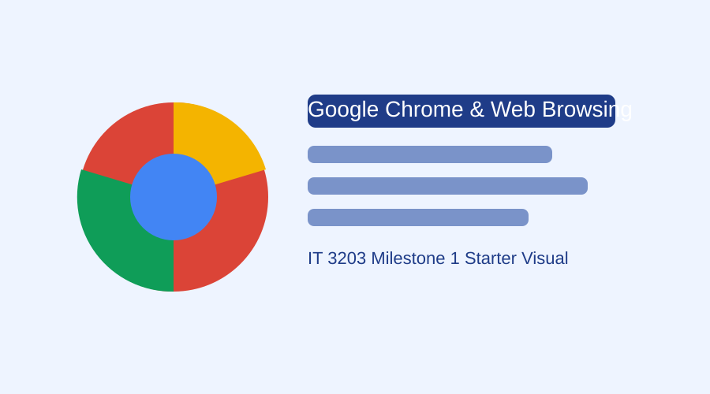

Welcome
The World Wide Web (WWW) has become a major part of modern day life, and web browsers are the tools that allow people to access websites, online shopping, streaming, email, and cloud applications. This website introduces Google Chrome as an important web technology because of its speed, security, wide compatibility, and influence on modern web development.
This project is based on research about how browsers work, how Google Chrome developed during the browser wars, and how Chrome continues to shape user experience today.

Figure 1. A simple visual banner for the project homepage.
Key Terms
Connects a typed web address to the correct server.
Protocols used to request and transfer web resources.
The rendering engine used by Chrome to display pages.
Chrome's JavaScript engine for fast code execution.
A security method that limits what web pages can access.
Progressive Web Apps behave more like installed applications.
Table of Contents
Website Goals
- Explain the purpose of web browsers in the client-server model.
- Describe important Google Chrome technologies such as Blink and V8.
- Show Chrome's historical growth and its influence on web development.
- Introduce major concepts related to web browsing, security, and standards.